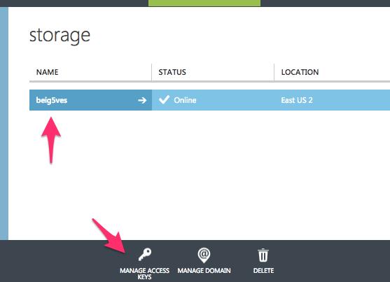

Azure Cloud Storage Management Lab
Set up your development environment
-
Install the azure-storage npm module into the gateway device using putty. Run:
npm install azure-storage -
Obtain the storage account details from the configuration file.
Establish a connection with Azure cloud
-
Create a new JavaScript file named azure.js
-
Create a node reference variable for the module:
var azureStorage = require('azure-storage'); -
Create a table service to establish a connection with the Azure storage account.
var tableService = azureStorage.createTableService(accountName, accessKey);Please refer Cloud Config document for storage account details.

Create an Azure table
-
Using the table service object, call the function
createTableIfNotExistswith table name as parameter.tableService.createTableIfNotExists('tableName', function(error, result, response){ if(!error){ // table created or already exists } });The result will be true if table is created and false if the table already exists. The response contains information about the request.
Insert an entity in Azure Table
Azure table storage takes data as entities. Each entity must contain a RowKey and PartitionKey, unique identifiers for the entity. A RowKey must be unique to every row.
- PartitionKey
- Determines the partition where the entity is stored in
- RowKey
- Unique identifier for the entity within the partition
Using entityGenerator to create entities.
var entGen = azure.TableUtilities.entityGenerator;
Table service supports a subset of data types defined by the OData Protocol Specification. By default a property is created as type String if type is not specified.
var entGen = azureStorage.TableUtilities.entityGenerator;
var azureEntity = {
PartitionKey : entGen.String(sensor_id),
RowKey : entGen.String(timestamp.toString()),
value : entGen.Double(value),
timestamp : entGen.Int64(timestamp)
};Call insertEntity method on table service object with azureEntity object as parameter
tableService.insertEntity('mytable', azureEntity, function (error, result, response) {
if(!error){
// Entity inserted
}
});On success, result will contain the ETag of the inserted record and response will contain information about the operation.
Store multiple entities on to Azure Table storage
You can insert multiple entities in a single batch operation. A single batch can contain up to 100 entities. All entities must contain the same partition key.
var batch = new azureStorage.TableBatch();
var entGen = azureStorage.TableUtilities.entityGenerator;
for(i in data) {
entity = data[i];
var azureEntity = {
PartitionKey : entGen.String(entity.sensor_id),
RowKey : entGen.String(entity.timestamp.toString())
}
for (var propertyName in entity) {
azureEntity[propertyName] = entGen.String(entity[propertyName]);
}
}
insertOrReplaceEntity method replaces an existing entity else inserts a new one if entity deosn’t exists.
batch.insertOrReplaceEntity(azureEntity);
Setting echoContent to true returns the inserted entities as part of the result variable.
tableService.executeBatch(self.config.table, batch,
{echoContent: true},
function (error, result, response) {
if(!error) {
// Batch completed
logger.info('Azure - Data sent successfully');
}
});Query data from Azure Table
Create query expression using the TableQuery object.
For example to build a query that returns top 50 entities with Partition key of sensor_id
Timestamp based query
dataQuery = new azureStorage.TableQuery().top(50).where('PartitionKey eq ?', readQuery.sensor_id);
Build a query that returns top 50 entities with Partition key of sensor_id and timestamp greater than or equal to timestamp value
Sensorid based query
dataQuery = new azureStorage.TableQuery().top(50).where('PartitionKey eq ?', readQuery.sensor_id).and('timestamp ge ?', readQuery.timestamp);
Use queryEntities function on table service object to perform the query.
tableService.queryEntities('tableName', dataQuery, null, function(error, results) {
if(!error){
// query successful
}
}On success, result.entries will contain an array of entities that match the query. If the query was not able to return all entities, result.continuationToken can be used as the third parameter of queryEntities to retrieve more results. For the initial query, we used null as the third parameter.
Use lodash module to remove the standard properties from the results
_.map(resp, function (entity){
delete entity["PartitionKey"];
delete entity["RowKey"];
delete entity["Timestamp"];
delete entity[".metadata"];
for (var propertyName in entity) {
entity[propertyName] = entity[propertyName]["_"];
}
});
client.queryEntities(‘tableName’, {
query: dataQuery,
onlyFields: ['sensor_id', 'timestamp', 'value']
}, function(err, results, continuation) {});
Delete an Azure Table
tableService.deleteTable(tablename, function(error, response){
if(!error){
// Table deleted
}
});
Additional resources
Microsoft documentation - https://azure.microsoft.com/en-us/develop/nodejs/
Azure node project - https://www.npmjs.com/package/azure
Azure Table Storage client - https://www.npmjs.com/package/azure-table-node
Azure - https://msdn.microsoft.com/en-us/library/azure/dn578280.aspx
Azure Storage Explorer - https://azurestorageexplorer.codeplex.com/